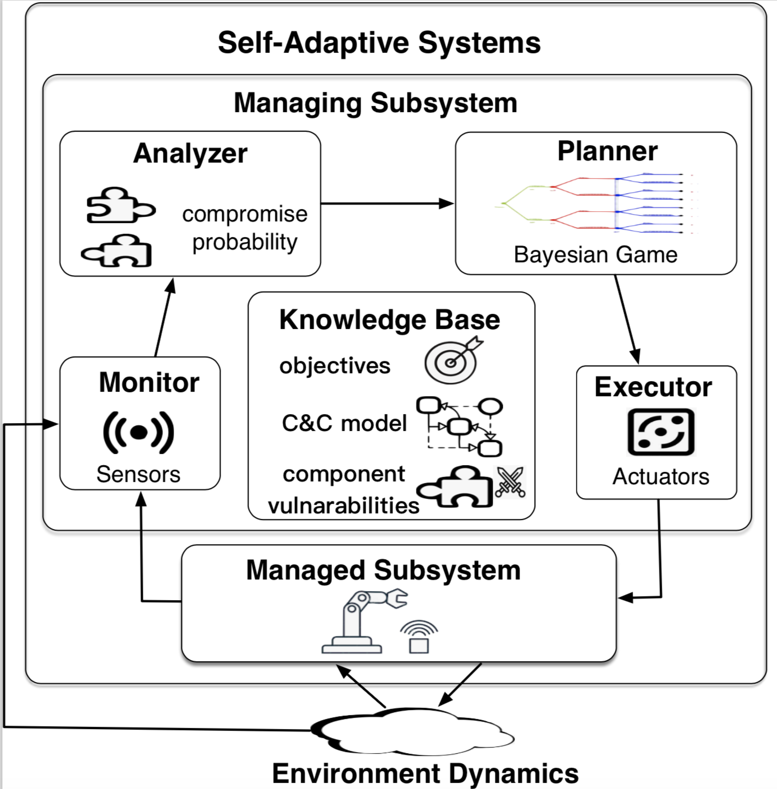

This website includes more information on the models, and the implementation used for the example cases of the submission "System Component-Level Self-Adaptations for Security via Bayesian Games".
We propose a new self-adaptive framework incorporating Bayesian Game. Adaptation behaviors build on the Nash equilibrium from unexpected attacks and are achieved by elaborating the widely adopted mechanism of the MAPE-K (Monitoring, Analysis, Planning, Execution, Knowledge) loop.\\
Knowledge. Knowledge Base requires the system developers or domain experts to specify (1) the component and connector model of the managed subsystem and its action space for each component, (2) system objectives usually defined as the quality attributes quantified by the utility, and (3) component vulnerabilities with potential behavior deviations that can be exploited by the potential attacks. Other necessary information such as the history information of system behaviors and environment information are saved in Knowledge Base and can be updated for the sake of self-adaptation.
Monitor. Events generated in the managed subsystem or environment indicating the execution of system actions or natural changes in the environmental factors are received. Monitor gathers and synthesizes the on-going attacks information through sensors and saves information in the Knowledge Base. For our example, events such as plenty of user request loss or command injection can indicate a potential attack on the web server. Analyzer. During speculative analysis, conditions of the environment/managed subsystem representing violations or better satisfaction of goals that can arise based on the input from Monitor are identified. The Analyzer performs analysis and further checks whether certain components are attacked with probabilities; potential deviated malicious actions are identified; the rewards for the attack are estimated, based on the knowledge about component vulnerabilities and system objectives. Such attack probabilities can be analyzed with a statistical combination of all feasible scenarios along with expert judgment. A typical example is that both Server2 and Server3 are analyzed to be compromised and discarding user requests with a certain probability, reducing the system utility.\\
Planner. Planner generates a workflow of adaptation actions aiming to counteract violations of system goals or better achieving goals. It consists of one or a set of actions to be enacted by automatically solving the Multi-player Bayesian Game transformed with the input of potential attacks from the Analyzer and architectural model of the managed subsystem along with the system objectives. For each security situation, it generates an equilibrium if one exists as the adaptation to respond to unexpected attacks, or prompts for a change in the design of the system if the violation cannot be handled. Distributing more percentage of a user request to the normal server while decreasing the percentage to those with a high probability of compromise as well as adjusting the fidelity level for servers could be feasible actions for Znn.com Website under security attacks.\\
Executor. During execution, the strategies from the adaptation equilibrium are enacted on the managed subsystem through actuators. Typical examples could be setting the distribution percentage of user percentage in LoadBalancer for each server. In the next part, we focus on planning activity with Bayesian game theory. We assume adequate monitoring in place, sufficient analysis methods on potential attacks with uncertainties based on observation and historical information, as well as an execution environment through which selected adaptation strategies are enacted.